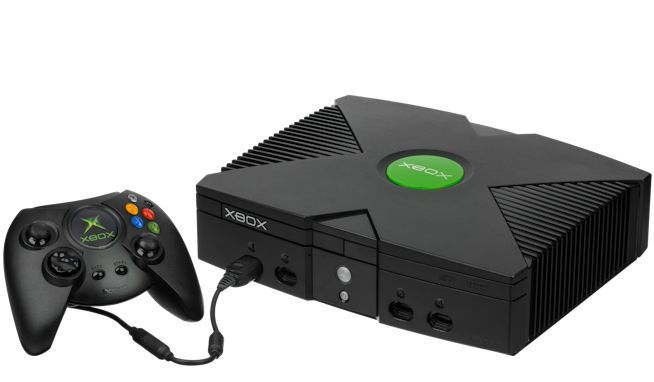
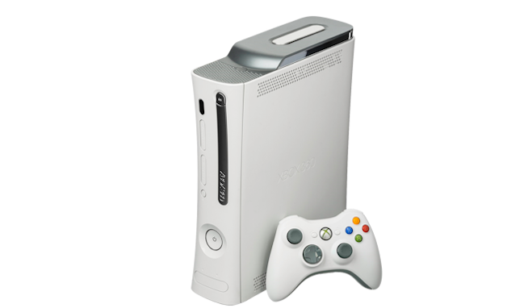
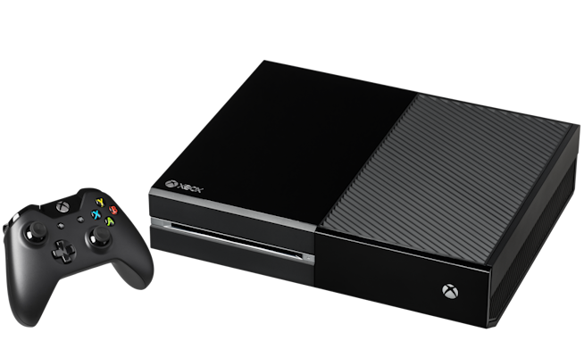
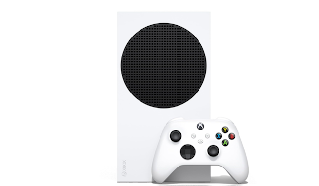
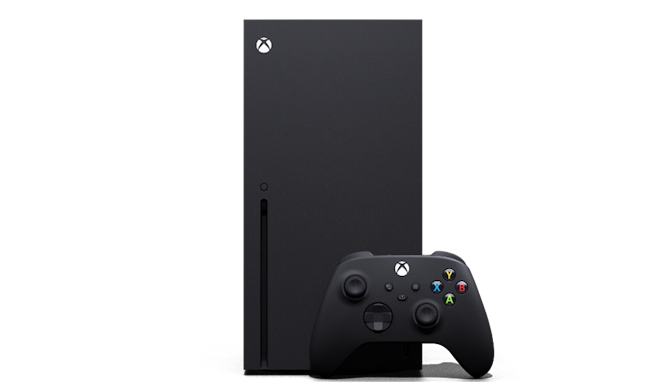

Xbox
Xbox es la primera videoconsola de sobremesa fabricada por Microsoft, lanzada en 2001. Surgió como una apuesta para competir con Sony PlayStation 2 y Nintendo GameCube, y marcó el inicio de la presencia de Microsoft en el mercado de los videojuegos.
24.000.000 unidades vendidas.

Xbox 360
La Xbox 360 fue lanzada en 2005 y se convirtió en una de las consolas más exitosas de la generación 7. Ofreció una gran variedad de servicios online, incluyendo Xbox Live, y dio continuidad a la presencia de Microsoft en el mercado doméstico.
84.000.000 unidades vendidas.

Xbox One
Xbox One llegó en 2013 como la siguiente generación de consolas de Microsoft. Diseñada para ofrecer una experiencia más conectada y enfocada en servicios en línea, representó un salto importante en la era de la multimedia y el juego digital.
58.000.000 unidades vendidas.

Xbox Series X|S
Lanzadas en 2020, Xbox Series X y Series S son las consolas actuales de Microsoft. Ofrecen un rendimiento más potente, compatibilidad con generaciones anteriores y un enfoque claro en la velocidad y la experiencia de juego en la era del acceso digital.
Más de 30.000.000 unidades vendidas en total.

